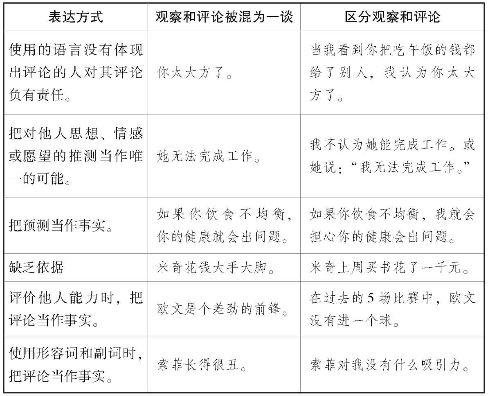
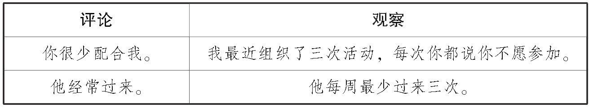

我知道如何回应你
当你说我做了什么或没做什么，
我也可以回应你的评论，
但请不要把二者混淆。
如果你想把任何事情搅浑，
我可以告诉你怎么做：
把我做的事情
和你的反应混为一谈。
告诉我你感到失望
当你看到事情还没做完，
但说我“不负责任”
并无法打动我。
告诉我你感到受伤
当我对你的请求说“不”，
但说我“冷漠”
并不会增加你以后的机会。
是的，我知道如何回应你
当你说我做了什么或没做什么，
我也可以回应你的评论，
但请不要把二者混淆。
——马歇尔·卢森堡
非暴力沟通的第一个要素是观察。我们仔细观察正在发生的事情，并清楚地说出观察结果。非暴力沟通并不要求我们保持完全的客观而不作任何评论。它只是强调区分观察和评论的重要性。将观察和评论混为一谈，人们将倾向于听到批评，甚至会产生逆反心理。
同时，非暴力沟通不鼓励绝对化的评论，而主张评论要基于特定时间和环境中的观察。语义学家温德尔·约翰逊（Wendell Johnson）认为，用静态的语言捕捉变动不居的现实，会造成许多困扰。他讲道：“我们的语言年代久远，但先天不足，是一种有缺陷的工具。它反映了万物有灵论的思想，让我们谈论稳定性和持久性，谈论相似之处、常态和种类，谈论神奇的转变、迅速的痊愈、简单的问题以及终极的解决办法。然而，我们的世界包含着无穷无尽的过程、变化、差别、层面、功能、关系、问题以及复杂性。静态的语言与动态的世界并不匹配，这是我们面临的挑战之一。”
以下这首歌反映了观察和评论的区别。
我从未见过懒惰的人；
我见过
有个人有时在下午睡觉，
在雨天不出门，
但他不是个懒惰的人。
请在说我胡言乱语之前，
想一想，他是个懒惰的人，还是
他的行为被我们称为“懒惰”？
我从未见过愚蠢的孩子；
我见过有个孩子有时做的事
我不理解
或不按我的吩咐做事情；
但他不是愚蠢的孩子。
请在你说他愚蠢之前，
想一想，他是个愚蠢的孩子，还是
他懂的事情与你不一样？
我使劲看了又看
但从未看到厨师；
我看到有个人把食物
调配在一起，
打起了火，
看着炒菜的炉子——
我看到这些但没有看到厨师。
告诉我，当你看的时候，
你看到的是厨师，还是有个人
做的事情被我们称为烹饪？
我们说有的人懒惰
另一些人说他们与世无争，
我们说有的人愚蠢
另一些人说他学习方法有区别。
因此，我得出结论，
如果不把事实
和意见混为一谈，
我们将不再困惑。
因为你可能无所谓，我也想说：
这只是我的意见。
——鲁思·贝本梅尔
负面标签的消极影响很明显——例如用“懒惰”和“愚蠢”这样的词形容人。然而，正面或中性的标签也会妨碍我们全面了解一个人，例如用“厨师”一词定义人。
01人类智力的最高形式
印度哲学家克里希那穆提（J.Krishnamurti）曾经说，“不带评论的观察是人类智力的最高形式。”第一次听到这个观点时，“胡说八道”这个想法在我脑中一闪而过——在不知不觉中，我作出了评论。对于大多数的人来说，观察他人及其行为，而不评判、指责或以其他方式进行分析，是难以做到的。
在为一个小学提供咨询服务时，我对此有了深刻的体会。这个学校的教师和校长经常反映彼此很难沟通。于是，学区负责人请我协调双方的矛盾。我先和全体教师交谈，然后请校长来参加讨论。
会谈一开始，我就问：“校长的哪些行为不符合你们的需要？”“他是个大嘴巴。”有人马上回答。我的问题是想了解他们的观察——校长说了什么或做了什么，而“大嘴巴”只是这位教师对校长的评价。
在我指出这一点后，第二位教师补充说：“我知道他是什么意思。校长的话太多了！”这仍是一个评论——评论校长话多还是话少。随后，第三位教师说：“他认为只有他的话有价值。”我解释说，推测别人想什么与观察他的行为并不是一回事。最后，第四位教师也表明了看法：“他希望所有的人都一直听他讲话。”当我说这也是猜测时，有两位教师脱口而出：“你的问题真难回答啊！”
接着，我们注意区分观察和评论，一起列出了校长的具体行为。例如，在全体教员会议中，校长会讲他的童年和战时经历，有时导致会议超时20分钟。我问他们是否已向校长反映问题，他们说，他们试过，但从没有提及具体行为——例如校长在会议中回忆往事。最后，他们同意，在校长参加讨论时，指出这些行为。
与校长的会谈开始后，我很快就发现教师们一直在说的事情。不论讨论的主题是什么，校长总是插话：“这让我想到……”然后，他就开始讲他的童年和战时经历。我等着教师们说出他们的不快。然而，他们运用的不是非暴力沟通，而是无声的抗议。一些人滴溜溜转着眼睛；另一些人故意打着哈欠；还有个人直盯着手表。
我忍耐着这痛苦的场面，过了一会儿，我问道：“没有人有话要说吗？”接着是有些别扭的沉默。后来，在之前会谈中率先发言的那位教师鼓起勇气，冲着校长说：“你是个大嘴巴！”
可见，不受旧习惯束缚，学会区分观察和评论，并不容易。最后，教师们终于告诉校长，他在做哪些事时，他们会感到不安。校长听后抱怨说：“为什么从没有人提醒我呢？”他承认他有讲故事的习惯。然而，他接着就开始说与这个习惯有关的故事！这时，我提醒了他。会谈结束时，我们总结了几个办法。一旦教师们不想听校长回忆往事，就温和地提醒他。
02区分观察和评论
在以下的表格中，我举例说明如何区分观察和评论。

注意：“每次”“曾”等词语在以下句子中表达的是观察结果。
·我看安迪打了几次电话，每次都至少打半小时。
·我不记得你曾写信给我。
“总是”、“从不”等词语在以下句子中表达的是评论。
·你总是很忙。
·在需要她的时候，她从不出现。
如果我们的表达言过其实，别人就可能产生逆反心理，而不愿作出友善的回应。
“经常”和“很少”这样的词语也可能混淆观察和评论。

03小结
非暴力沟通的第一个要素是观察。将观察和评论混为一谈，别人就会倾向于听到批评，并反驳我们。非暴力沟通是动态的语言，不主张绝对化的结论。它提倡在特定的时间和情境中进行观察，并清楚地描述观察结果。例如，它会说“欧文在过去的5场比赛中没有进一个球”，而不是说“欧文是个差劲的前锋”。
非暴力沟通实例
“我们遇到的最傲慢的演讲者”
以下的对话来自我主持的一个研讨班。在讲解了半小时后，我停下来请学员反馈意见。这时，有个人举起了手，他说：“你是我们遇到的最傲慢的演讲者！”
如果有人这样对我说话，我的反应有几种可能。其中之一是认为自己确实有问题。我知道，一旦我想为自己辩护或开脱，我就默认了自己有问题。另一种反应是把对方的话视为攻击而给予反击。这一次，我既没有辩解也没有指责对方，而用心理解为什么他会这么说。
04练习一：观察或评论？
完成以下的练习，看看自己是否可以熟练区分观察和评论。请标出那些只是描述观察结果而不含任何评论的句子。
1.“哥哥昨天无缘无故对我发脾气。”
2.“昨晚妹妹在看电视时啃指甲。”
3.“开会时，经理没有问我的意见。”
4.“我父亲是个好人。”
5.“迈克的工作时间太长了。”
6.“亨利很霸道。”
7.“本周彼得每天都排在最前面。”
8.“我儿子经常不刷牙。”
9.“里奇告诉我，我穿黄色衣服不好看。”
10.“姑姑在和我说话时爱发牢骚。”
以下是我对练习一的理解：
1.如果你认为这一句是观察，我们意见不一致。我认为“无缘无故”是评论。此外，我认为说哥哥发脾气了也是评论。他也可能是感到害怕、悲伤或别的。以下例句描述了观察结果而不含任何评论：“哥哥告诉我，他生气了。”或是“哥哥用拳头砸了一下桌子。”
2.如果你认为这一句是观察，我们意见一致。
3.如果你认为这一句是观察，我们意见一致。
4.如果你认为这一句是观察，我们意见不一致。我认为“好人”是评论。以下例句描述了观察结果而不含任何评论：“在过去的25年中，父亲将他工资收入的十分之一捐给了慈善机构。”
5.如果你认为这一句是观察，我们意见不一致。我认为“太长了”是评论。以下例句描述了观察结果而不含任何评论：“本周迈克在办公室工作了60小时以上。”
6.如果你认为这一句是观察，我们意见不一致。我认为“很霸道”是评论。以下例句描述了观察结果而不含任何评论：“亨利在他姐姐换电视节目频道时，撞了她一下。”
7.如果你认为这一句是观察，我们意见一致。
8.如果你认为这一句是观察，我们意见不一致。我认为“经常”是评论。以下例句描述了观察结果而不含任何评论：“本周我儿子有两次没刷牙就上床睡觉。”
9.如果你认为这一句是观察，我们意见一致。
10.如果你认为这一句是观察，我们意见不一致。我认为“爱发牢骚”是评论。以下例句描述了观察结果而不含任何评论：“本周姑姑给我打了三次电话，每次都说别人不尊重她。”
面具
总是一副面具
由纤细白皙的手举着
挡在脸前，
那轻轻举着面具
的手腕
十分灵巧：
虽然有时
有点颤抖，
指尖抖动，
但总是
能把面具举好。
年复一年我不禁好奇
但不敢问
终于
无意中
看到了面具背后
却
什么也没有。
她没有脸。
她已成了
优雅地
举着面具的手。
——佚名